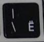
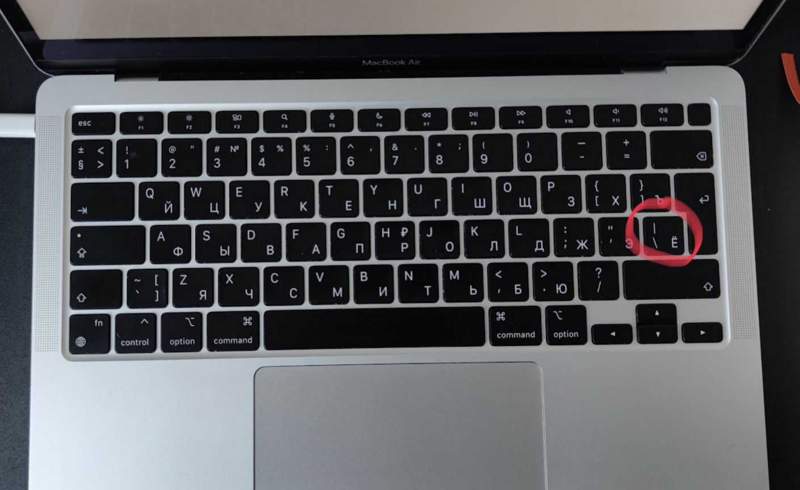
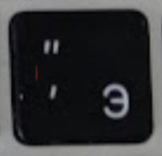
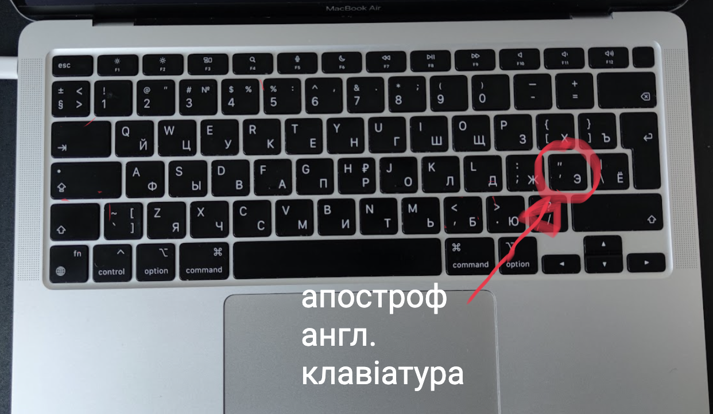

Символ " ʼ " апостроф на мак (українська клавіатура
Для того щоб поставити апостроф
на макбуці натисніть клавішу з позначенням |\
( 

Апостроф на мак (англійська мова клавіатури)
Для того щоб поставити апостроф
на макбуці натисніть клавішу з позначенням Є
( 

Ютюб інструкція
Слова з апострофом в українській мові
- імʼя
- пʼятниця
- пʼю
- п’ять
- дев'ять
- м’ясо
- м'ята
- бур'ян
- сім'я
- з любов'ю
- з матір'ю
- кур’єр
- здоров’я
- м'язи
- кров'ю
- компʼютер
- зв’язок
- інтерв'ю
- м'яч
- львів'янин
- харків’янин
- В'ячеслав
- Мар'яна
- Лук'ян
- черв'як
- з'єднати
- об'єднати
- під’їхати
- пам’ятний
- з’ясувати
- м'який
Чи є апостроф частиною алфавіту?
Матеріал з Вікіпедії — вільної енциклопедії.
Апостроф— нелітерний орфографічний знак, який не позначає звука. Апостроф не входить до алфавіту і на розміщення слів у словниках не впливає.
Правила використання апострофа в українській мові
Матеріал з Вікіпедії — вільної енциклопедії.
Апостроф в українській мові використовується перед літерами я, ю, є, ї, коли вони позначають поєднання приголосного [й] з голосними [а], [у], [е], [і] та б, п, в, с, і та р.
Апостроф ставиться перед я, ю, є, ї:
- Після літер, що позначають губні тверді приголосні звуки б, п, в, м, ф, якщо перед ними немає іншого приголосного (крім р), який належав би до кореня: солов'їний, сім'я, м'ята, п'ятниця, зв'язати, п'ю, б'ється, в'яз, м'язи, ім'я, В'ячеслав, Стеф'юк; верб'я, верф'ю, торф'яний, черв'як. Але: свято, морквяний, мавпячий, цвях. Якщо приголосний, що стоїть перед губним, належить до префікса, то апостроф теж ставиться: зв'язок, підв'ялити, обм'яклий, розв'ючувати.
- Після твердого р у кінці складу: подвір'я, сузір'я, на узгір'ї, з матір'ю, кур'єр, пір'їна. Якщо ря, рю, рє позначають поєднання м'якого [р'] із голосними а, у, е ([р'а], [р'у], [р'е]), то апостроф не пишеться: рясний, Рябко, буря, рюмсати, Рєпін.
- Після будь-якого твердого приголосного, яким закінчується префікс або перша частина складних слів: без'язикий, від'єднати, з'ясувати, над'їдений, над' ярусний, роз'ятрити, роз'юшений; дит'ясла, пан'європейський.
- Після к у словах Лук'ян, і похідних від нього: Лук'яненко, Лук'янчук, Лук'янчик, Лук'янівка тощо.
Апостроф не ставиться:
- Після б, п, в, м, ф, що позначають тверді губні звуки, якщо перед ними стоїть інша, крім р, літера на позначення кореневого приголосного звука: Святослав, святковий, тьмяний, морквяний, медвяний (але: торф'яний, черв'як, верб'я).
- Після літери р, що позначає м'який приголосний на початку слова чи в середині складу: порятунок, рясний, гарячий, буряк.
- У словах іншомовного походження в злитній вимові: резюме.
Апостроф у словах іншомовного походження та похідних від них пишеться перед я, ю, є, ї:
- Після приголосних б, п, в, м, ф, г, к, х, ж, ч, ш, р: б'єф, комп'ютер, п'єдестал, інтерв'ю, прем'єр, торф'яний, к'янті, миш'як, кар'єра; П'ємонт, П'яченца, Рив'єра, Ак'яб, Іх'ямас; Барб'є, Б'єрнсон, Б'юкенен, Женев'єва, Ф'єзоле, Монтеск'є, Руж'є, Фур'є.
- Після кінцевого приголосного в префіксах: ад'юнкт, ад'ютант, ін'єкція, кон'юнктура.
Апостроф не пишеться:
- Коли я, ю позначають пом'якшення попереднього приголосного перед а, у: бязь, бюджет, бюро, пюпітр, мюрид, фюзеляж, кювет, рю кзак, рюш, Барбюс, Бюффон, Вюртемберг, Мюллер, Гюго, Рюдберг.
- Винятки: ад'ютант, кон'юнктивіт, кон'юнктура, ін'єкція.
Дізнайтесь розміщення інших символів на клавіатурі макбуку на сторінці: Клавіатура мак.
Дякую за увагу. Читайте більше навчальних матеріалів про мак на сайті абетка!